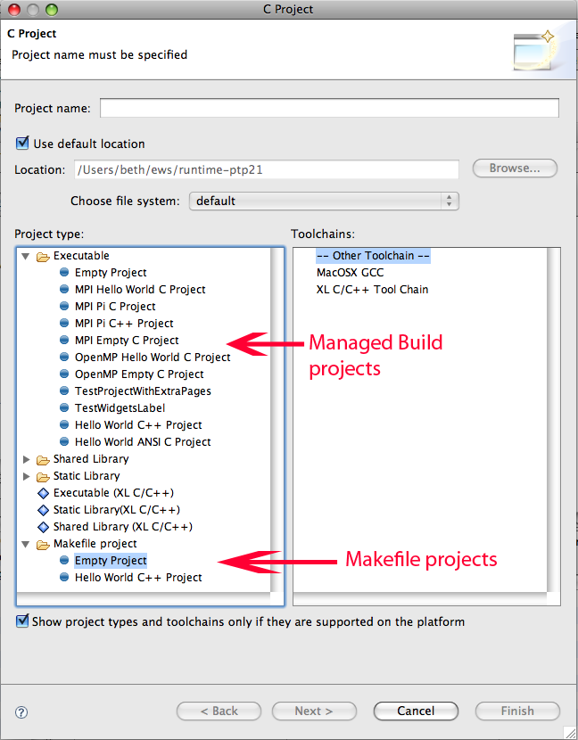
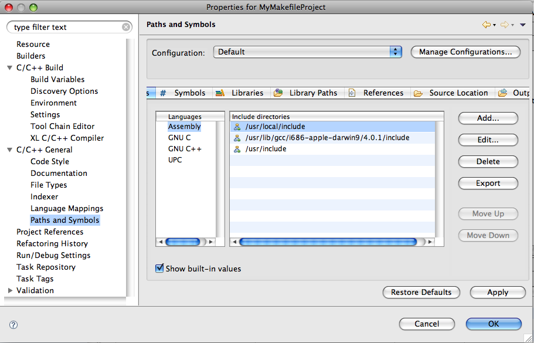

When you use the CDT new project wizards, you will see several types of projects. A regular "C Project," for example, will create and manage the makefile and building for you. This is sometimes called a "Managed Build" Project.
If you want to provide your own makefile, you will create a "Makefile project" and create the makefile within that project.

For a Makefile project, the Project Properties look a bit different. To bring up the project properties dialog, rightMouse on the project in the Project Explorer view, and choose "Properties" at the bottom of the context menu.

Set up the includes to point to your MPI (or OpenMP, or UPC, or LAPI) include path.
You set up the PLDT preferences the same way as for regular C (Managed Build) projects.